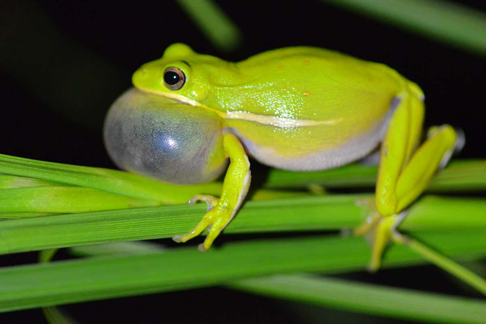
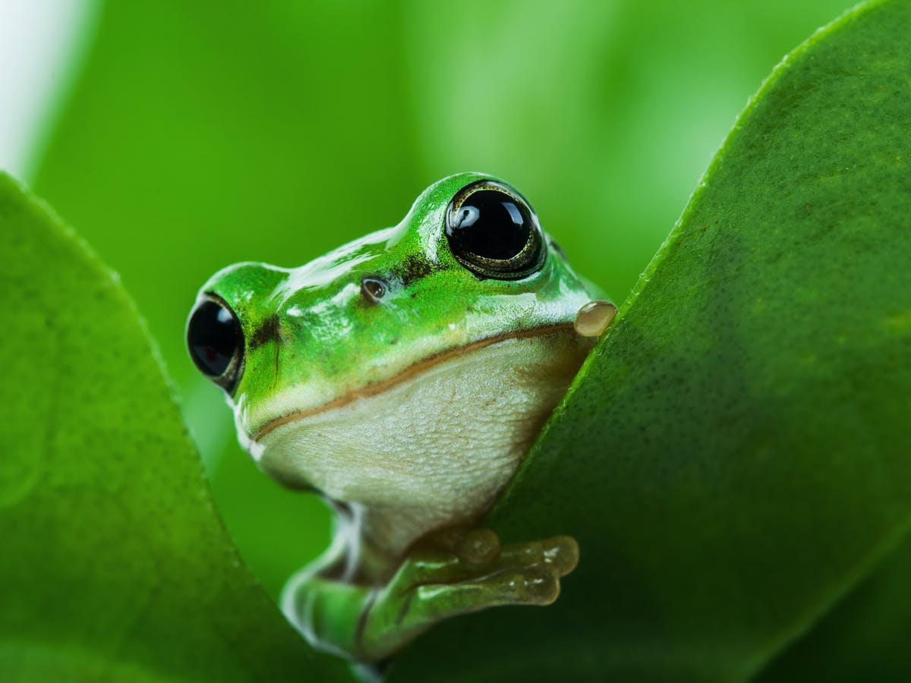
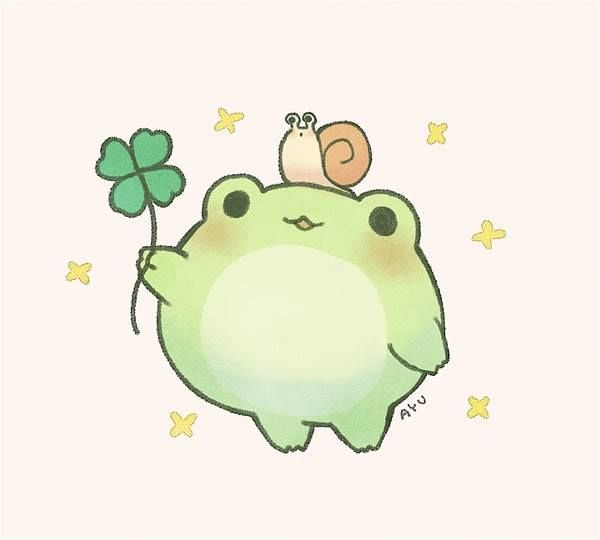

Ranita globo owo
This type of ranita looks curious to me, for it's particular anatomy, just look at its mouth sack :0 uwu

Big eyes froggy O.O
I love so much this froggies for its big eyes and cute face, when I look at them I can't avoid to say "owww" >w<

Cute froggy illustration -w-
This illustrations about cute froggies inspire me so much and it's of my favorites because are easy to draw for me owo